Tame Your Chrome Tabs
& Reclaim System Memory
An easy, fast way to clean up Chrome browser tabs: find tabs draining RAM or CPU, discover duplicate URLs, live-search across windows, and focus or close tabs instantly from your terminal.
brew install smford/tap/chrome-tab-cleaner

Why Clean Up Chrome Tabs?
Dozens of open tabs quietly consume gigabytes of memory, spike processor loads, and slow your machine down.
🚨 Memory & CPU Drain
Web apps, video streams, and complex dashboards run background scripts that accumulate gigabytes of RAM. Finding which tab is responsible inside Chrome is tedious.
🔍 Lost Across Windows
Tabs end up scattered across multiple windows, spaces, and profiles. Finding that one documentation page or GitHub PR takes endless clicking.
⚡ Instant Terminal Action
Sort by Memory or CPU in 1 keypress, search across hundreds of tabs in milliseconds, hit Enter to raise the tab window, or hit x to kill the tab immediately.
Visual Showcase
High-resolution terminal screenshots illustrating core workflows and inspection modes.
📊 Live Memory Footprint Sorting
Correlates all open tabs across windows with live Chrome Task Manager memory usage.
🔍 Interactive Fuzzy Filter
Press / to filter hundreds of tabs instantly by title or destination URL.
⚡ CPU Spikes & Renderer Detection
Sort with c to instantly isolate background runaway scripts or WebGL loads.

🎯 Direct Window Focus & Tab Termination
Press Enter to raise the tab window via AXRaise, or x to kill the tab immediately.

Installation Methods
Install via Homebrew, download signed release binaries, or build from source.
Install via the official tap with automated Homebrew formula updates:
brew tap smford/tap
brew install chrome-tab-cleanerDownload pre-compiled hermetic binaries for macOS and Linux:
# macOS Apple Silicon (M1/M2/M3/M4)
curl -sSL "https://github.com/smford/chrome-tab-cleaner/releases/download/v0.1.0/chrome-tab-cleaner_0.1.0_darwin_arm64.tar.gz" | tar -xz
sudo mv chrome-tab-cleaner /usr/local/bin/
# macOS Intel
curl -sSL "https://github.com/smford/chrome-tab-cleaner/releases/download/v0.1.0/chrome-tab-cleaner_0.1.0_darwin_amd64.tar.gz" | tar -xz
sudo mv chrome-tab-cleaner /usr/local/bin/Compile and install directly with the Go toolchain:
go install github.com/smford/chrome-tab-cleaner/cmd/chrome-tab-cleaner@latestRun the container image or healthcheck daemon via GitHub Container Registry:
docker pull ghcr.io/smford/chrome-tab-cleaner:latestCore Architecture & Capabilities
Engineered for low latency and zero memory overhead.
⚡ Batch Tab Enumeration
Discovers all open windows and tabs across profiles via macOS AppleScript in a single batch query (~0.8s for 400+ tabs).
📊 Live Task Manager Metrics
Reads real-time process metrics from Chrome's Task Manager via Accessibility UI APIs, matching tabs by memory footprint and CPU %.
🎯 Direct Window & Tab Raise
Brings selected tabs and windows immediately to the foreground using native macOS AXRaise and Chrome tab indexing.
Interactive Keybindings
Ergonomic keyboard shortcuts for rapid navigation.
| Key | Action | Description |
|---|---|---|
↑ / ↓ or k / j |
Navigate | Move table selection up and down across tabs. |
Enter |
Focus Tab | Raise the target window and switch to the selected tab. |
m |
Sort by Memory | Sort all open tabs in descending order of memory usage. |
c |
Sort by CPU | Sort all open tabs in descending order of CPU consumption. |
t |
Sort by Title | Alphabetical sort by web page title. |
/ |
Search / Filter | Live fuzzy filter by tab title or URL (Esc/Enter to return). |
x |
Close Tab | Close the highlighted tab directly from the TUI. |
r |
Refresh | Query Chrome for newly opened tabs and fresh metrics. |
q |
Quit | Exit application. |
Enterprise DevSecOps Standards
Zero-trust supply chain security, continuous compliance, and static/dynamic testing.
| Security Layer | Tool / Mechanism | Protection Benefit |
|---|---|---|
| Static Analysis (SAST) | GitHub CodeQL + Semgrep OSS | Semantic taint tracking & vulnerability detection on every PR. |
| Dynamic Analysis (DAST) | OWASP ZAP Baseline Scan | Automated security scan against daemon readiness & health endpoints. |
| Supply Chain Security | OpenSSF Scorecard + Cosign | Cryptographic keyless signing and SLSA supply-chain audits. |
| Secret Leak Protection | Pre-commit hooks (Gitleaks, hygiene) | Prevents credential leakage into repository history. |
| SRE Quality Gates | gh-stats PR blast-radius auditing |
Automated DORA metrics and risk-budget evaluations on pull requests. |